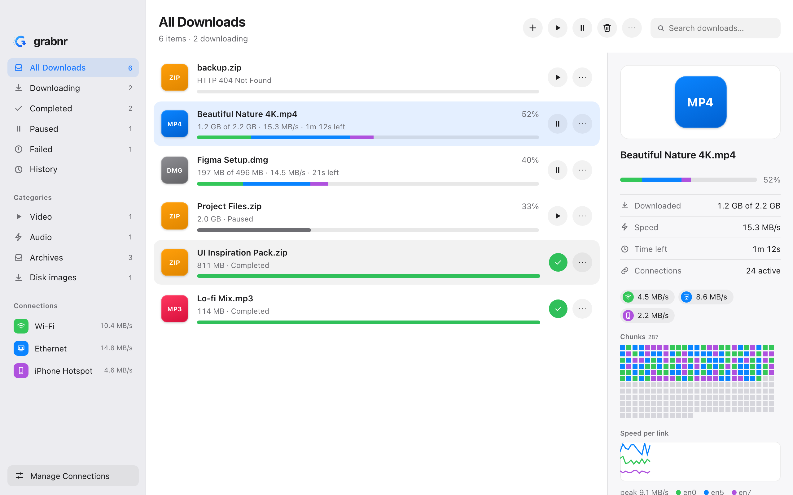
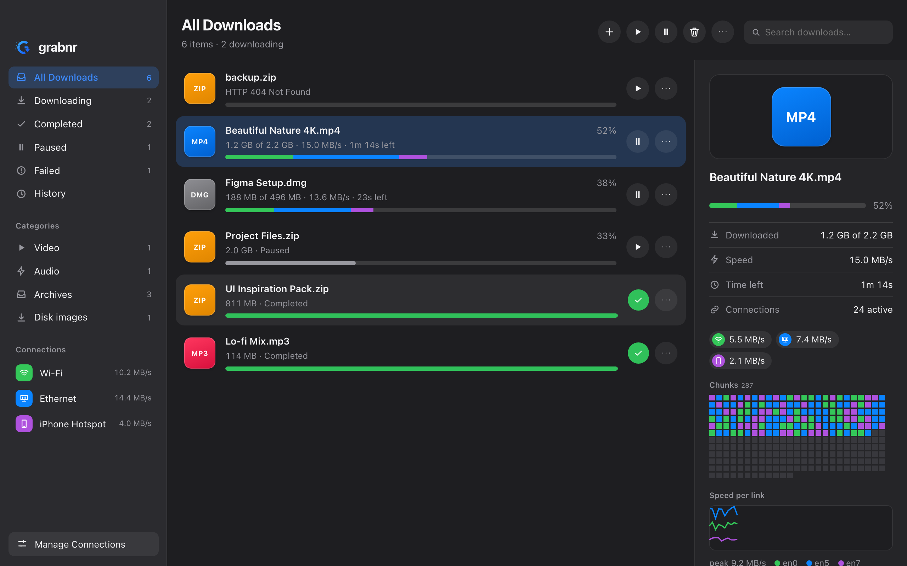

One download.
Every connection.
grabnr uses Wi-Fi, Ethernet, USB and phone tethering at the same time. Each file is split into pieces and every connection pulls from the same queue, so faster links take more.


Your connections were always separate. Now they work as one.
Find every link
Wi-Fi, Ethernet, USB tethering and cellular, with address and gateway. VPN tunnels are left out by default.
Cut the file into pieces
One shared queue of chunks. A worker on each link takes the next one, so a faster link takes more.
Finish sooner
Slow or stalled connections are raced and replaced near the end, and the file is checked when it is done.
A download manager that respects your machine.
Built with Tauri 2 and Rust, so the installer is small and memory use stays low.
Multi-link downloads
Every enabled connection pulls from one queue. Set a share or a speed limit per link.
Resume that holds
Progress inside a piece survives pauses and crashes. Finished pieces are verified by checksum on resume.
Hot-plug links
Plug in a phone mid-download and it joins. Unplug one and its work moves to the others.
Browser extension
Hands downloads from Chrome, Brave, Edge, Firefox and Safari to the app. If grabnr is closed, the browser downloads normally.
Queue and schedule
Priorities, drag to reorder, rules by day and hour, and an action when everything is done.
Checksums and mirrors
Verify SHA-256, SHA-1 or MD5. Add mirrors and Metalink files for more sources and a built-in hash.
Six languages
English, Spanish, French, German, Portuguese and Bengali, chosen in preferences or from your system.
Command line
The grabnr CLI uses the same engine. Run grabnr spike to test that traffic really leaves through each link.
Private by design
No account and no telemetry. The local API listens on 127.0.0.1 only and refuses requests from web pages.
Downloads from
Get grabnr.
Free for macOS, Windows and Linux. Pick your system below, or see every build on GitHub.
Download for your system
Builds are attached to each GitHub release.
Download Checking the latest release…| macOS | Linux | Windows | |
|---|---|---|---|
| Keeps a download on its connection | strong binding | strong binding | by source address |
| Menu bar / tray | popover | tray menu | popover |
| Dock progress, Keychain, Quick Look | yes | — | — |
| Tested in CI | build, tests, UI | build, lint, tests | build, tests |
// Builds are not yet code-signed, so macOS and Windows may warn on first launch (see the guides below).
// Prefer building yourself? npm install && npm run tauri build
Up and running in a few minutes.
01Install on macOS
- Download the
.dmgfor your chip (Apple silicon or Intel) and drag grabnr to Applications. - Because the build is unsigned, right-click the app, choose Open, then confirm once.
- Open Manage Connections and tick the links you want to use.
02Install on Windows or Linux
- Windows: run the
.exeor.msiinstaller. If SmartScreen appears, choose More info → Run anyway. - Linux: install the
.debor.rpm, or run the.AppImage. - On Windows, each adapter needs its own router for traffic to add up.
03Connect your browser
- Start grabnr (the extension talks to
127.0.0.1:17653). - Open
chrome://extensions(Brave and Edge work too), enable Developer mode and choose Load unpacked. - Select the
extension/folder from the repository. There is nothing to pair.
04Use the command line
# list your connections grabnr links # download over every link grabnr get https://proof.ovh.net/files/100Mb.dat -o ~/Downloads # only some links, with a speed cap and checksum grabnr get URL --only en0,en5 --limit 20 --checksum sha256:<hex> # check that traffic really leaves through each link grabnr spike --secs 8

Free, and yours to read.
grabnr is MIT licensed and developed in the open. Found a bug or want a feature? Open an issue or send a pull request.